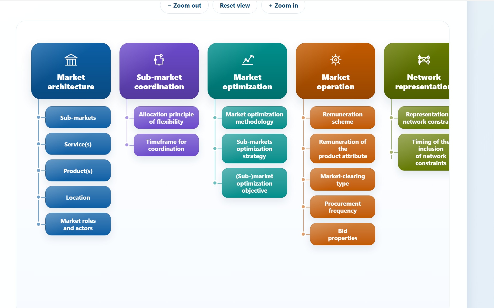

Start
A network need emerges
Describe the need by location, timing, duration, severity, and certainty.
DSO flexibility procurement at distribution level
Flexibility is not one market. It is a portfolio of choices on infrastructure, access, pricing, obligations, and procurement.
DSOs can combine rules, flexible connections, network tariffs, and market-based procurement, alongside reinforcement and DSO-owned resources.
Review the framework, challenge the boundaries between mechanisms, and help turn it into a practical European reference.
The complete flexibility-acquisition landscape
Start from the network need, compare the available routes, then combine mechanisms only where their roles and interactions are clear.
Start
Describe the need by location, timing, duration, severity, and certainty.
First comparison
Compare reinforcement, operational measures, DSO-owned resources, and third-party flexibility on cost, reliability, timing, and long-term value.
Administrative path
Use mandatory requirements only where justified; define the legal basis, proportionality, and user protection.
Selected deep dive - implicit signal
Use tariffs to influence routine grid use. Their value depends on a clear network cost driver, customer response, and coordination with other price signals.
Open tariff-design review →Selected deep dive - access condition
Use flexible access when firm capacity is constrained. Define access rights, curtailment, compensation, control, and the path to reinforcement.
Open connection-agreement review →Selected deep dive - explicit procurement
Use explicit procurement when a measurable service can be competitively bought. Success depends on liquidity, transparent rules, and compatibility with other markets.
Open Electricity System Services Market →Destination
Build a portfolio with clear boundaries, signal priority, protection against double charging or reward, and a defined role for reinforcement.
Why we selected three mechanisms for deeper research
We focus on three interfaces: price signals, access conditions, and explicit service procurement.
Implicit and preventive. Useful for recurring network needs, but sensitive to granularity, fairness, response, and interaction with explicit markets.
Contractual and locational. It can unlock capacity quickly, but requires clear curtailment rights, compensation, control, and a reinforcement pathway.
Explicit and measurable. It can reveal flexibility value, but depends on products, liquidity, clearing, coordination, settlement, and network constraints.
A customer may face a tariff, a connection condition, and a local-market opportunity at the same time. The key questions are signal priority, baselines, double commitment, compensation, liquidity, and reinforcement.
Three expert-review environments
Open a mechanism page, review its key dimensions, and leave focused feedback.
Review signal granularity, customer response, fairness, and coordination with explicit procurement.
Review access rights, curtailment, compensation, operational control, and market interaction.

Review architecture, coordination, optimization, operation, and network representation.
Choose a mechanism, test its design choices, and share the evidence or experience that should change the framework.
We are first inviting experienced European researchers, regulators, DSOs, aggregators, retailers, customers, and flexibility providers to test the logic of this platform. Your feedback can help us expose missing dimensions, distinguish national choices from transferable principles, and build shared research lines that move from conceptual gaps to implementable regulatory and operational solutions.
Complete reference library
The library retains the previous ESSM resources and adds the new procurement-mechanism documents.